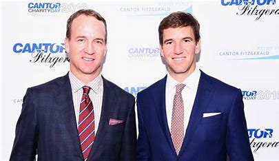

About Peyton Manning and His Family
Early Life
Peyton Manning was born on March 24, 1976, in New Orleans, Louisiana. He is the son of former NFL quarterback Archie Manning and Olivia Manning.
College Career
Peyton Manning attended the University of Tennessee, where he played for the Tennessee Volunteers. He set numerous records and won several awards during his college career, including the Maxwell Award and the Davey O'Brien Award.
NFL Career
Peyton Manning was the first overall pick in the 1998 NFL Draft, selected by the Indianapolis Colts. He played 14 seasons with the Colts before joining the Denver Broncos for the final four seasons of his career. Manning retired from professional football in 2016.
Personal Life
Peyton Manning is married to Ashley Thompson, and they have twins, a son named Marshall and a daughter named Mosley. The family resides in Denver, Colorado.
Family Members
Peyton's father, Archie Manning, played quarterback in the NFL for the New Orleans Saints. His older brother, Cooper Manning, works in the energy sector. His younger brother, Eli Manning, also had a successful career as an NFL quarterback, playing for the New York Giants and winning two Super Bowls.